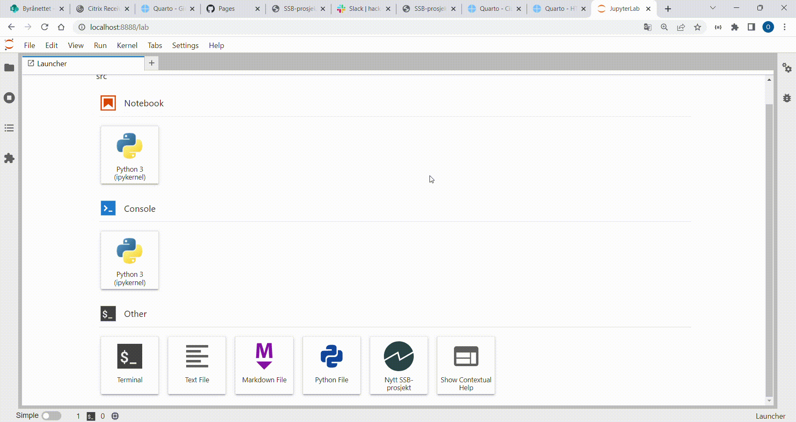

Template for statistikkproduksjon
Under SSBs hackathon for 2022 har vi1 laget et program som implementerer beste-praksis for koding av statistikkprodukter i Python. Forhåpentligvis gjør dette det lettere å følge god kode-skikk og sikrer at statistikk utvikles på en trygg og enhetlig måte.
Vi har laget et CLI med en tilhørende Jupyterlab-extension som gjør følgende:
Oppretter en mappestruktur som er hensiktmessig for statistikkproduksjon.
Initierer et virtuelt miljø med Python-pakken
Poetry.Setter opp en
Python-kernelforJupyterlabmed samme navn som det virtuelle miljøet.Setter opp versjonshåndtering med GIT iht til beste praksis for versjonshåndtering i SSB:
- initierer
giti den lokale mappen som opprettes - legger til SSB sine standard
.gitignoreog.gitattributes - oppretter et
Github-repo på SSB sitt område på Github.
- initierer
Programmet vi har laget er uavhengig av hvilken IDE du benytter. På sikt ønsker vi å utvide den til å håndtere R-baserte prosjekter i tillegg til Python. Vi har også laget en Jupyterlab-extension som gir brukerne mulighet til å opprette SSB-prosjekter direkte fra Jupyterlab.
F.eks. hvis man ønsker å opprette et prosjekt ved navn stat-test, så kan man skrive følgende inn i terminalen:
ssb-project create stat-test
Ønsker man å opprette samme prosjekt fra Jupyterlab gjør man følgende:

1 Hvorfor trenger vi dette?
I overgangen til SSB sin nye skyplattform dapla er det nødvendig med noen nye arbeidsprossesser når man programmer. Vi må blant annet:
- versjonshåndtere med GIT
- gjøre kjøremiljøet reproduserbart
- opprette egen Jupyterlab-kernel for de som bruker Jupyterlab som IDE
Dette vil hjelpe oss med å skrive sikker kode og reproduserbare resultater. For de som ikke er vant med denne arbeidsformen så kan oppstarten være vanskelig. Ved å gjøre oppstarten enklere håper vi at denne delen av arbeidet skal bli mye lettere.
2 Forutsetninger
Følgende må være på plass hvis du ønsker å bruke Github-delen av programmet:
- Du må ha en Github-bruker knyttet til statisticsnorway.
- Du må ha et Personal Access Token fra Github.
Klikk på lenkene over for å få en oppskrift på hvordan dette kan gjøres.
3 Hva gjør programmet?
Vi har bygget to komponenter i dette hackathon:
Terminal-program (command-line interface eller CLI):
Det er her all funksjonalitet er lagret, og den kan benyttes av alle IDEer.Jupyterlab extension:
Det er et grensesnitt mot CLI der du kan kjøre scriptet fra Jupyterlab.
Under finner du mer detaljer om begge tilnærminger:
3.1 Command-line interface
CLI med navn ssb-project. Hvis du ønsker all funksjonalitet2 kan du kjøre:
ssb-project create stat-test --github-token 1adkjflksdjjgbsfjkdsfj
I tilleg kan velge bort noe funksjonalitet:
Ingen versjonshåndtering med GIT:
ssb-project create stat-test --skip-github
Angi åpenheten til Github-repo:
ssb-project create stat-test --repo-privacy internal3
3.2 Jupyterlab-extension
Vi har bygget en Jupyterlab-extension med navn @jupyterlab/ssb-project. Den lar deg sende inn parameterne som skal inn i CLI fra Jupyterlab. Du kan benytte den ved å:
- Åpne Launcher
- Trykk på Nytt SSB-prosjekt
- Fyll inn feltene
- Trykk Ok
Når dette er gjort har du fått en mappe på ditt hjemmeområde som inneholder SSB-prosjektet. Hvis du den prosjektnavnet stat-test vil det være en mappe på ditt hjemmeområde med det navnet.
4 Etter opprettelse av prosjekt?
Selv om programmet håndteret mye av det som må gjøres ved et nytt prosjekt, så er et noen ting man bør gjøre etterpå:
Mer kommer.
5 Veien videre
Programmet bør i fremtiden kunne gjøre følgende:
- Slette det som er opprettet.
- Bygge et miljø som allerede er skapt av programmet.